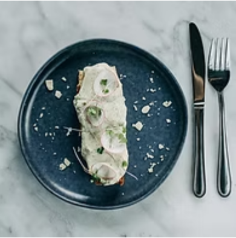

Pasta
Osteria
Menu

focaccia, tuna riete, cucumber, radish

focaccia, ricotta, truffle, low salt salmon, capers
Pasta Osteria Italian Restaurant Tbilisi
- Our restaurant offers a delightful dining experience with a focus on authentic Italian cuisine made from fresh ingredients.
- Come and immerse yourself in the world of Italian gastronomy at Pasta Osteria, where every bite of pasta is filled with love.From intimate dinners to large celebrations,
- Pasta Osteria is the ideal venue for any occasion. Join us for a culinary adventure that will tantalize your taste buds and leave you craving more. We look forward to hosting you at Pasta Osteria for an unforgettable dining experience. Pizza, Pasta, Italian Cuisine Tbilisi.

- იტალია
- იტალიამ
- იტალიას
- გერმანია
- გერმანიამ
- გერმანიას
- საფრანგეთი
- საფრანგეთმა
- საფრანგეთს